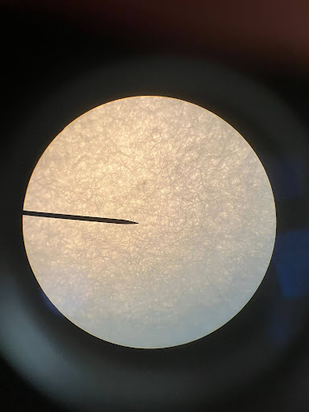
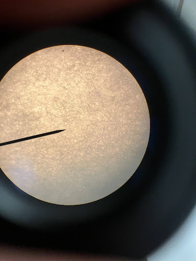
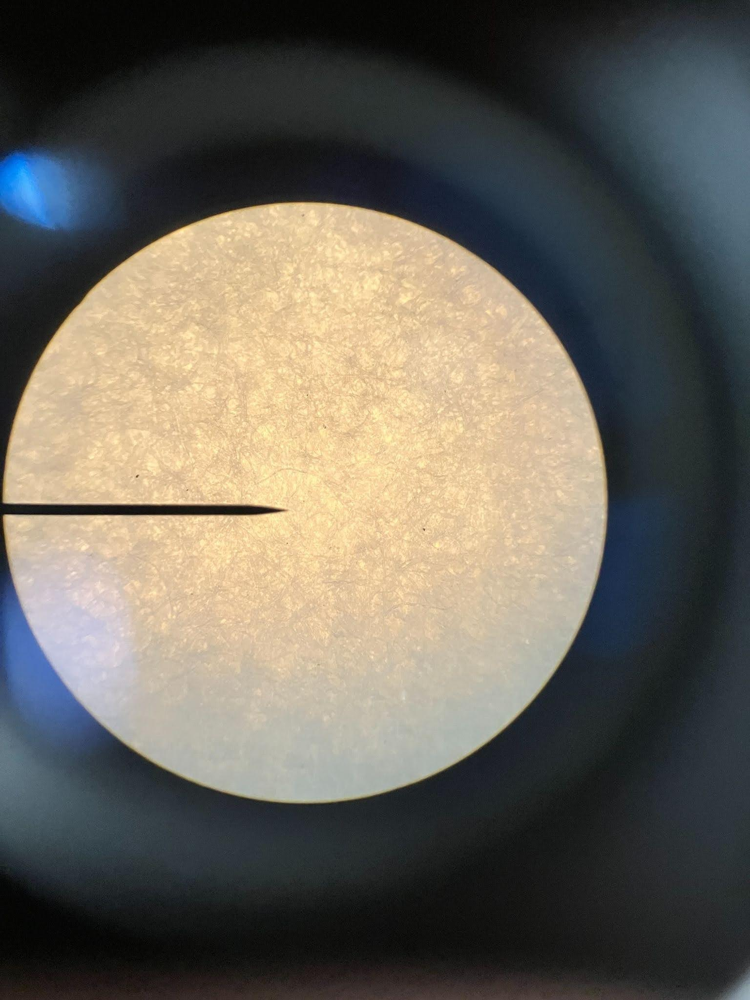
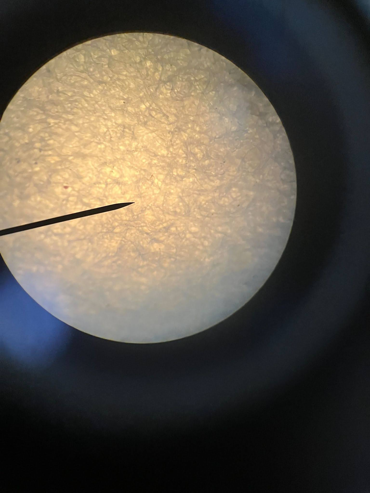
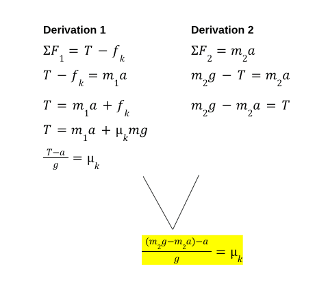

Observations




Data
| Material (μk) | Trial #1 | Trial #2 | Trial #3 | Average |
|---|---|---|---|---|
| Canson Bristol (0.066) | 0.85s | 0.77s | 0.73s | 0.78s |
| Canson Mixed Media (0.068) | 0.83s | 0.76s | 0.79s | 0.79s |
| Canson Watercolor (0.057) | 0.67s | 0.75s | 0.66s | 0.69s |
| Arches Watercolor (0.081) | 1.17s | 1.06s | 0.87s | 1.03s |
| Canvas* (0.120) | 0.91s | 0.73s | 0.82s | 0.84s |
Derivation
